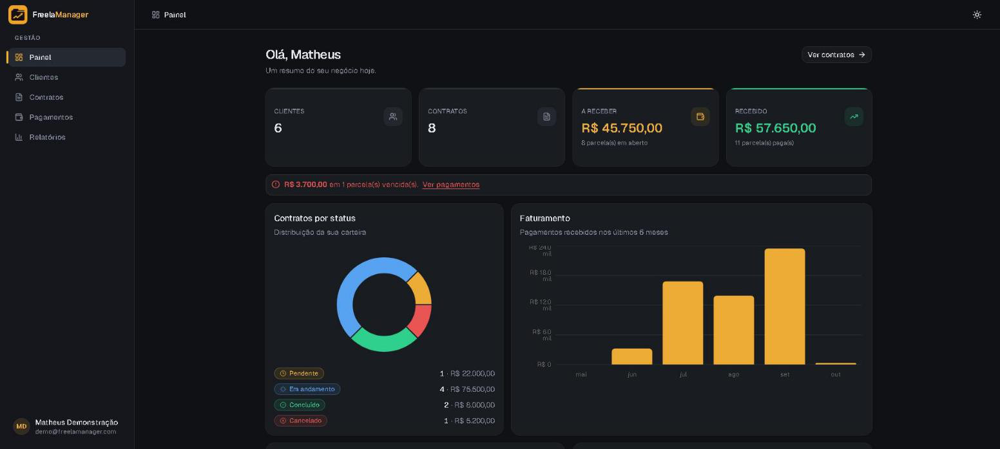
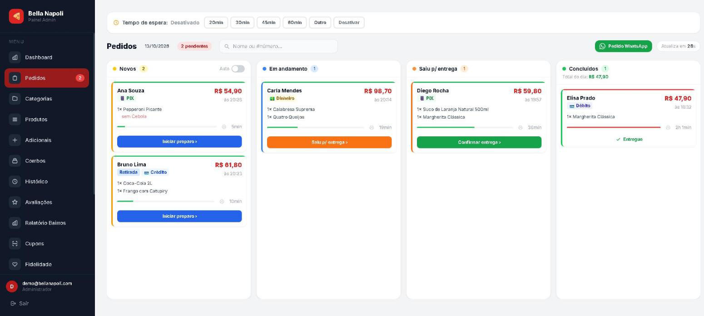
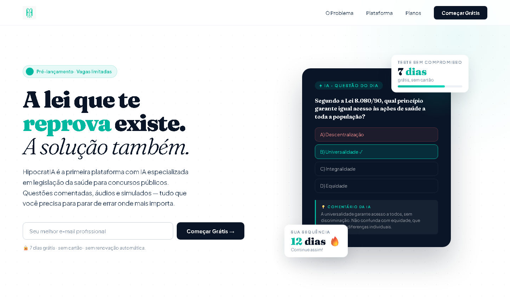

Disponível para início imediato em vagas de desenvolvedor júnior
Sistemas de gestão, relatórios financeiros e integrações bancárias em produção desde 2023.
Sou Matheus Morais, desenvolvedor full-stack em Goiânia. Na ASSEGO, criei e mantive os sistemas de gestão usados por mais de 100 funcionários e o aplicativo de cerca de 9 mil associados, com cobrança integrada ao Sicoob e ao Itaú.
- Disponibilidade
- Imediata, em Goiânia ou remoto
- Experiência
- Desde 2023, em três empresas
- Formação
- Análise e Desenvolvimento de Sistemas, Senac Goiás
- Idiomas
- Português nativo, inglês B2
Sobre
Comecei em 2023 e passei a maior parte desse tempo dentro de sistemas que já existiam: código legado, banco cheio de dado real e usuário esperando do outro lado. Foi assim que aprendi a ler antes de escrever.
Até outubro de 2026 trabalhei na ASSEGO, uma associação com cerca de 9 mil associados, mantendo e criando os sistemas internos usados por mais de 100 funcionários: contratos, financeiro, relatórios, cobrança e o aplicativo dos associados. No último ano lá passei a atuar também em Java corporativo (Java 7/8 em JBoss EAP) e em telas Angular — em nível inicial, mas já entregando manutenção com autonomia.
Sou formado em Análise e Desenvolvimento de Sistemas pelo Senac Goiás e tenho certificado de inglês nível B2 pelo Centro de Línguas da UFG (480 horas), além de vivência na Alemanha. Procuro uma vaga de desenvolvedor júnior onde eu possa aprofundar essa stack e crescer junto com um time que revisa código.
Experiência
Do mais recente ao mais antigo.
-
01/2025 — 10/2026
Estagiário de Desenvolvimento
ASSEGO Associação dos Subtenentes e Sargentos do Estado de Goiás
- Sistema de gestão de contratos com fluxo de aprovação, geração de PDF e histórico de alterações.
- Sistemas de gestão, dashboards e relatórios usados por mais de 100 funcionários do administrativo e do financeiro, com filtros e exportação em PDF/Excel.
- Integração com as APIs de pagamento do Sicoob e do Itaú: emissão de boletos, retorno de pagamentos e rotinas de cobrança.
- PWA usado por cerca de 9 mil associados, com foco em responsividade e uso no celular.
- Manutenção em aplicações Java 7/8 em JBoss EAP 6 e 7 e correções em telas Angular.
- Modelagem MySQL/PostgreSQL, versionamento com Git e deploy em Linux.
-
07/2023 — 04/2024
Estagiário de Desenvolvimento
JHON CODE Agência de desenvolvimento web
- Sistemas web sob medida para diversos clientes, do banco ao front.
- Painéis administrativos para que o cliente gerenciasse o próprio conteúdo sem depender de dev.
- Autenticação segura: hash de senha, sessões e controle de acesso por perfil.
- Modelagem de banco e diagramas de sistema antes de escrever código.
-
01/2023 — 06/2023
Estagiário de Desenvolvimento
FIO GUIA Controle financeiro para médicos
- Primeiro contato profissional com desenvolvimento, em produto financeiro real.
- SQL, Flutter e integração de APIs no aplicativo dos clientes.
- Fluxos de automação de conversas no WhatsApp com Manychat.
-
01/2023 — 06/2025
Análise e Desenvolvimento de Sistemas
Faculdade Senac Goiás Formação concluída
- Engenharia de software, qualidade de software, banco de dados e metodologias ágeis.
-
Concluído em 2026
Inglês, nível B2
UFG Centro de Línguas da Universidade Federal de Goiás
- 480 horas, nível B2 do Quadro Comum Europeu.
- Vivência na Alemanha.
Projetos
Três sistemas que construí por conta própria. Todos estão no ar.
-

Full-stack · código aberto
FreelaManager
Clientes, contratos e recebimentos para freelancers
API em Express com JWT, PostgreSQL via Prisma e front em React. 95 testes rodam no CI a cada commit. Tem landing page e conta de demonstração que entra com um clique.
- React
- Express
- PostgreSQL
- Prisma
-

PHP · código aberto
Bella Napoli
Delivery para pizzaria, do cardápio ao kanban
Pedido pelo celular com cupom, fidelidade e QR Code de mesa; a pizzaria acompanha tudo num kanban. Antes de publicar, revisei a segurança e corrigi XSS, CSRF e acesso a pedidos de terceiros.
- PHP 8
- MySQL
- JavaScript
- Tailwind
-

Produto próprio · pré-lançamento
HipocratIA
Legislação da saúde para concursos, com IA
Questões comentadas por IA, simulados e assinatura pelo Mercado Pago, sobre um MVC próprio em PHP 8.1 com cerca de 30 mil linhas. Está no ar, ainda sem assinantes; o código é privado.
- PHP 8.1
- MySQL
- Claude API
- Mercado Pago
Também há repositórios de estudo de POO e princípios SOLID em Java. Todos os repositórios
Sistemas em produção
São sistemas internos, então não há link público. Aqui está o problema que cada um resolve e com o que foi feito.
-
Gestão de contratos
Cadastro, fluxo de aprovação em etapas, geração de documento em PDF e histórico completo de alterações. Substituiu um processo que vivia em planilha e e-mail.
PHP, MySQL, JavaScript, PDF
-
Dashboards gerenciais
Relatórios para o administrativo e o financeiro com filtros combinados e exportação em PDF e Excel — o que antes exigia pedir número para o TI.
React, TypeScript, PostgreSQL
-
Integração Sicoob e Itaú
Emissão de boletos, leitura do retorno de pagamento e rotinas automáticas de cobrança. A parte do sistema que não pode errar valor nem data.
PHP, APIs REST, Webhooks, MySQL
-
PWA do associado
Aplicativo instalável usado por cerca de 9 mil associados para acessar seus dados pelo celular, com layout pensado primeiro para tela pequena.
Next.js, TypeScript, PWA
-
Automação de rotinas internas
Importação de arquivos, geração de relatórios agendada e disparo de e-mail com PHPMailer. Horas de trabalho manual por mês que deixaram de existir.
PHP, Cron, PHPMailer, Linux
-
Manutenção de legado Java
Deploy de WAR, ajuste de datasource e investigação de erro por log em Java 7/8 sobre JBoss EAP 6 e 7, além de correções em telas Angular.
Java 7/8, JBoss EAP, Angular
Ferramentas
Utilitários de pagamento que qualquer pessoa pode usar. Rodam no navegador, sem enviar dados, com as mesmas regras das integrações bancárias que faço no trabalho.
-
Gerador de Pix copia e cola e QR Code
Monta o código no padrão BR Code do Banco Central, com CRC16, e lê um código recebido para conferir se ele foi alterado.
JavaScript, BR Code, CRC16, QR Code
-
Validador de boleto
Confere os dígitos verificadores em módulo 10 e 11, identifica banco, valor e vencimento, e desenha o código de barras Intercalado 2 de 5.
JavaScript, FEBRABAN, módulo 10 e 11, ITF
-
Leitor de arquivo de retorno CNAB
Abre o retorno de cobrança do banco e mostra quem pagou, quanto foi creditado e o que foi rejeitado, conferindo os totais do trailer. CNAB 240 e 400 do Itaú.
JavaScript, CNAB 240/400, FEBRABAN, CSV
Tecnologias
Agrupadas pelo quanto eu uso hoje. Abra qualquer uma para ver onde ela entrou no trabalho.
Domínio sólido
-
 PHP
PHPBase dos sistemas internos da ASSEGO e de todos os projetos de cliente na JHON CODE: gestão de contratos, rotinas de cobrança, geração de PDF e envio de e-mail com PHPMailer.
-
 TypeScript
TypeScriptLinguagem padrão do front das aplicações novas. Tipagem dos contratos de API de pagamento evitou boa parte dos erros de integração com Sicoob e Itaú.
-
 JavaScript
JavaScriptFront-end desde 2023: painéis administrativos, validação de formulários, tabelas dinâmicas e exportação de relatórios direto no navegador.
-
 HTML & CSS
HTML & CSSLayout responsivo em tudo que entrego, com atenção a acessibilidade básica e a telas de celular — este site inclusive, escrito à mão.
Uso diário
-
 React
ReactInterfaces dos dashboards gerenciais: filtros combinados, tabelas com muitos registros e exportação em PDF/Excel para as áreas administrativa e financeira.
-
 Next.js
Next.jsPWA dos associados — rotas, autenticação, cache offline e foco total em uso no celular, que é onde os associados realmente abrem o sistema.
-
 MySQL
MySQLModelagem e manutenção das bases dos sistemas internos: histórico de alterações de contratos, conciliação de pagamentos e queries de relatório.
-
 PostgreSQL
PostgreSQLBase das aplicações mais novas. Uso de views e funções para consolidar relatórios financeiros sem pesar no front.
-
 Docker
DockerPadronização dos ambientes de desenvolvimento para que PHP, banco e serviços subam iguais na minha máquina e no servidor.
-
Linux
Deploy e operação dos sistemas: permissões, cron, leitura de log, FTP/SFTP e diagnóstico quando algo cai fora do horário.
-
 Git
GitVersionamento em todos os projetos, branches por demanda e histórico limpo — inclusive em bases que não tinham controle nenhum antes.
Nível inicial
-
 Java
JavaJava 7 e 8 em sistemas legados: leitura de código existente, correção de rotinas e ajustes pontuais. Nível inicial, com apoio da equipe.
-
 Spring Boot
Spring BootEstudo dirigido e projetos próprios de API REST, para chegar preparado nas demandas de back-end Java do time.
-
 Angular
AngularCorreções em telas de sistemas já existentes: componentes, formulários e chamadas de serviço. Primeiro contato, feito com apoio da equipe.
-
 Flutter
FlutterNa FIO GUIA, telas do app de controle financeiro para médicos, consumindo API e integrando com o fluxo de atendimento.
-
 JBoss EAP
JBoss EAPEAP 6 e 7: deploy de WAR, ajuste de datasource e leitura de logs para investigar erro em produção.
Certificados
Formação e cursos. Clique em um certificado para ampliar.
Contato
Procurando um desenvolvedor júnior que já colocou sistema em produção?
Posso começar imediatamente, presencial em Goiânia ou remoto. Respondo em até um dia útil.
- +55 62 99201-4463
- in/arantes-matheus
- GitHub
- MatheusMorais1234